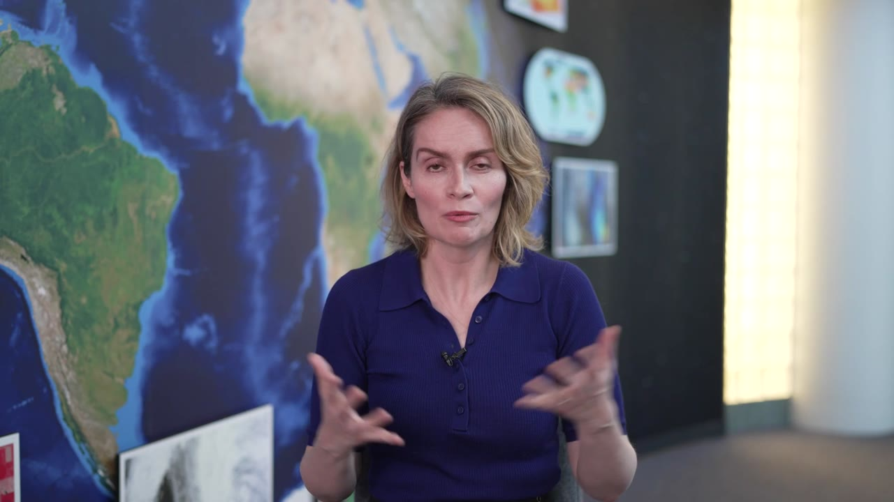
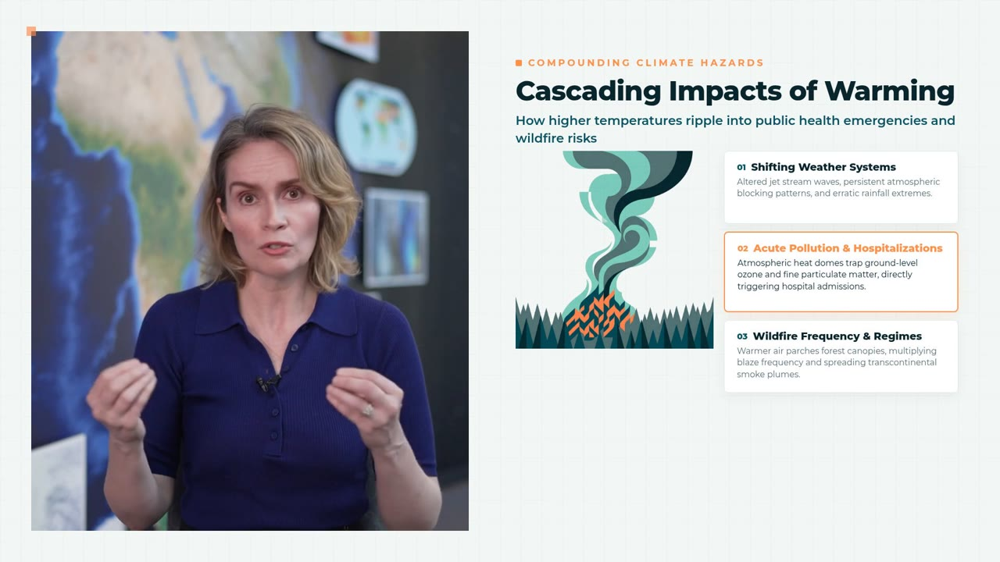
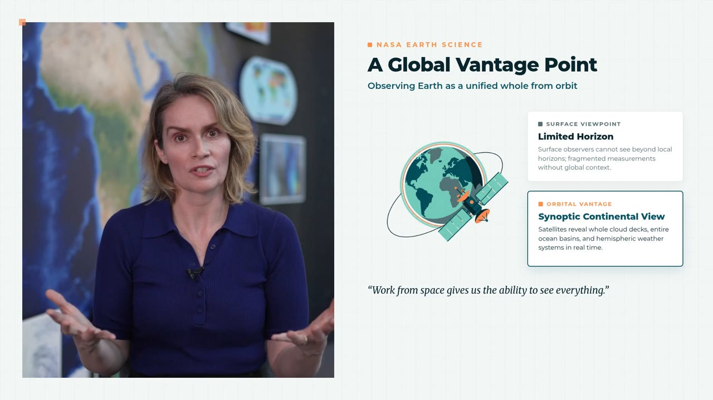
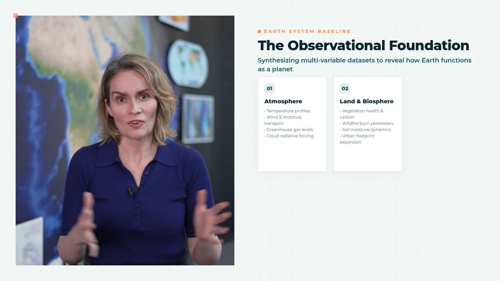
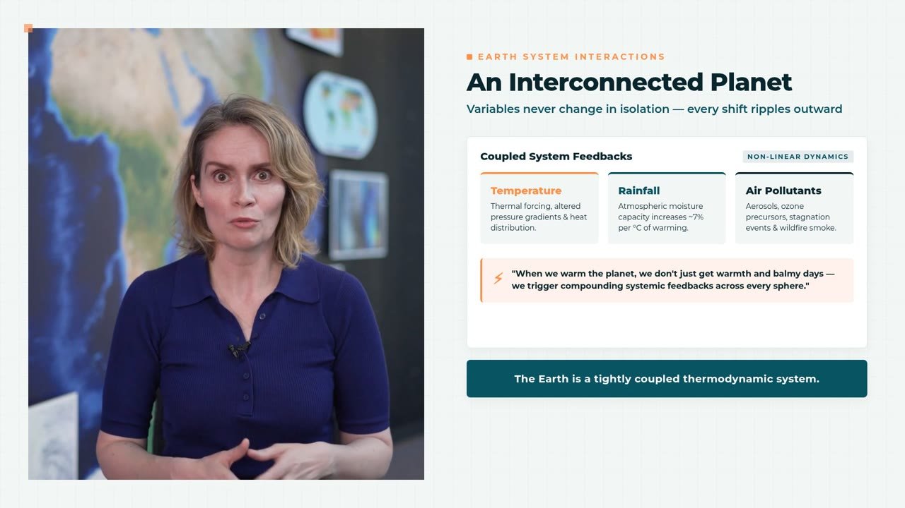
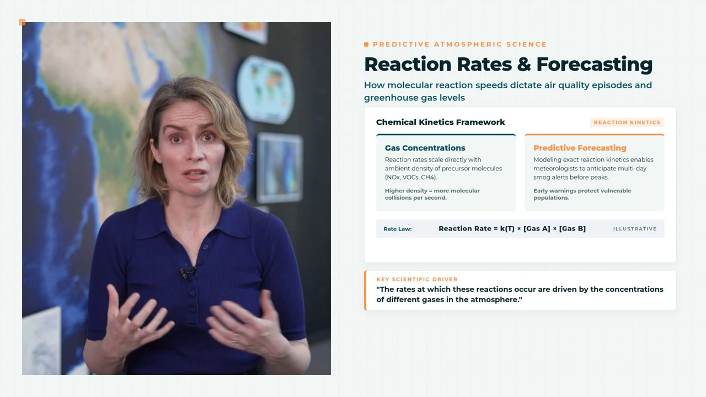
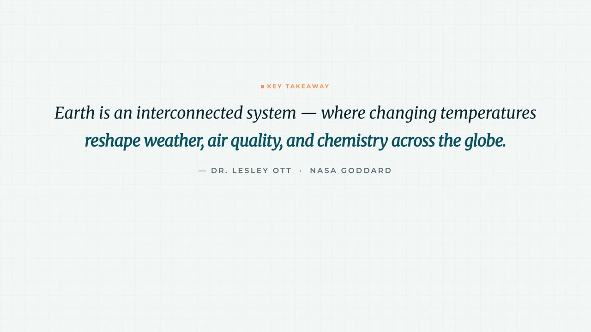
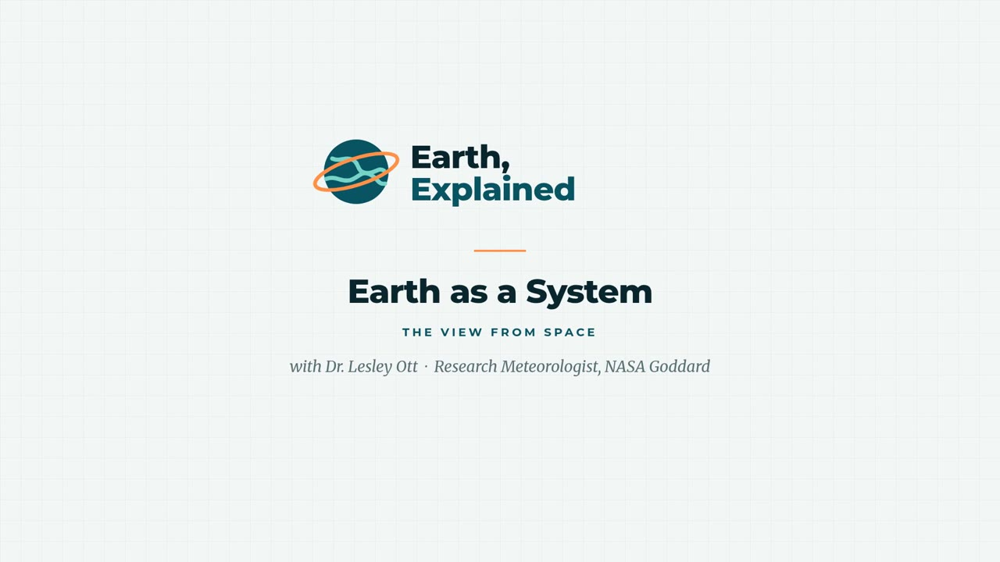

Elyps AI
You bring the raw footage. It does the rest.
Drop in a recorded talk, photos and a logo, and say what you want. A team of AI agents researches, cuts, animates and checks every frame, then hands you a finished, on-brand video. It runs sandboxed on your computer, with your own Gemini key.


Raw footageElyps editThe whole brief“Turn this interview into a short explainer for our channel, Earth, Explained. Add graphics at the key ideas, a clean intro and outro, and soft music. Use our logo and its colours.”
It works like a small studio. The lead agent understands the material and plans the edit with you. Then it hands each graphic, and any research, to its own subagent, and they all work at the same time.
Syncs the camera and the mic, transcribes every word, pulls your brand's colours from your logo or website, and looks up the speaker.
Sends a beat sheet: what's said when, and the graphic for each idea. You approve it or redirect it, in plain words.
Subagents research the web, capture pages, and write each animation as code, all at the same time.
Every graphic is rendered, looked at and fixed before it goes in. Then the lead renders the final 1080p video.
Lines up a separate mic with the camera, trims the silences, and times everything to a word-level transcript.
Charts that draw themselves, diagrams that build as they're named. Each graphic is its own HTML, SVG and GSAP animation, timed to the words.
Looks up the speaker and the claims in the talk, with sources. It captures pages as screenshots or smooth scrolling recordings, with the key line highlighted.
Draws illustrations in your brand's colours and composes a music bed that dips under the voice.
Click a graphic on the timeline and say what's different. Or message the agent while it works; it picks the note up at its next step.
The agents run inside a container on your computer, as their own user. They reach Gemini through a local proxy and never see your API key.






Frames from Elyps's edit of an interview with Dr. Lesley Ott, courtesy of NASA's Goddard Space Flight Center. “Earth, Explained” is a made-up channel for the example. NASA does not endorse Elyps.
Elyps runs in Docker Desktop, so everything it needs comes in one package. Give Docker 8 GB of memory in its Settings → Resources.
curl -fsSL https://raw.githubusercontent.com/ayushpatnaikgit/Elyps-AI/main/install.sh | shYou pay Google directly for Gemini usage; Elyps itself is free. The Usage page shows what each video cost.
You bring the raw footage. It does the rest.